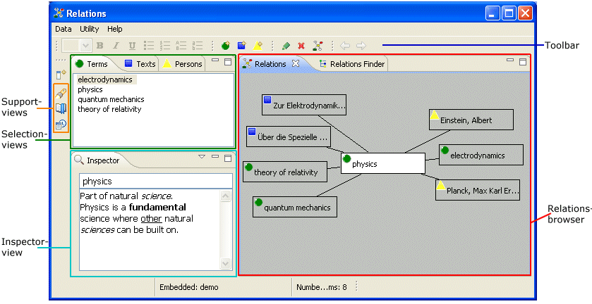

Getting started with Relations
The Relations application is a tool for knowledge management. It is a combination of a personal Wiki and an electronic slip box.
You can easily create items of three types (terms, texts and persons) and
set them in relation to other items already entered, thus creating a rich context for your items.
The main tasks of the Relations application are
creating items and
relating items
(i.e. creating the item's context).
The items and contexts created this way are fully editable. You can
edit items and
manage the items' contexts,
i.e. add and delete relations. To achieve this in an efficient way, the application
provides the following views:

Relations browser:
The Relations browser is the area where an item is displayed
with all items it is related to. You can navigate (i.e. move the focus) through the items displayed
and make a related item central, thus displaying its relations and related items.
Note: You can navigate back and forth through your history using the browser's navigation history.
Press the arrow on the workbench toolbar (or Alt+Left Arrow) to go back to the last visited item.
Pressing the  (or
(or ALT+Right Arrow) will get you back to the item you started.
Selection views:
The selection views allow to select items of the different types
(terms, texts and persons). Selected items can be made central (e.g. by
double clicking) or you can drag'n drop a selected item to an item displayed
in the relations browser, thus adding a new relation to the drop target.
Inspector view:
The Inspector view is the area for fast editing. The inspector view shows title
and content of the focus item in the Relations browser. Dependent on the item type,
either title, content or both are editable.
Support views
There are three support views helping you at your work.